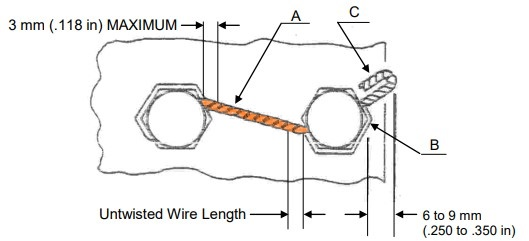

Calculateur de Torsades / Twist Calculator
Sélectionner l'unité (mm ou inch) / Select the unit (mm or inch):
mm
inch
Sélectionner la gamme de diamètre du fil :
Select the wire diameter range :
Jusqu'à 0,8mm inclus / Up to 0.8mm included (0,8mm=0.0315")
Supérieur à 0,8mm / Greater than 0.8mm (0,8mm=0.0315")
Distance entre les trous (en mm ou inch) se référer à la figure.
Distance between holes (in mm or inch) refer to the figure:
Calculer / Calculate

Source :
PCS-7610_iss05_EN
&
NCT-300-04_Rev10